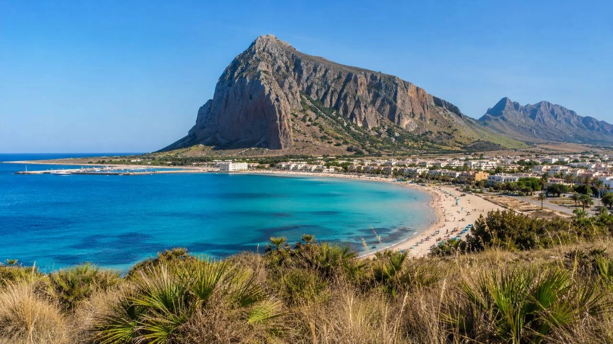
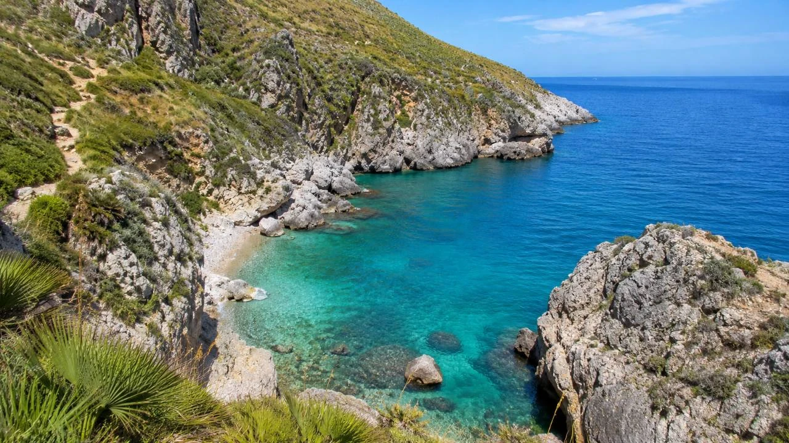
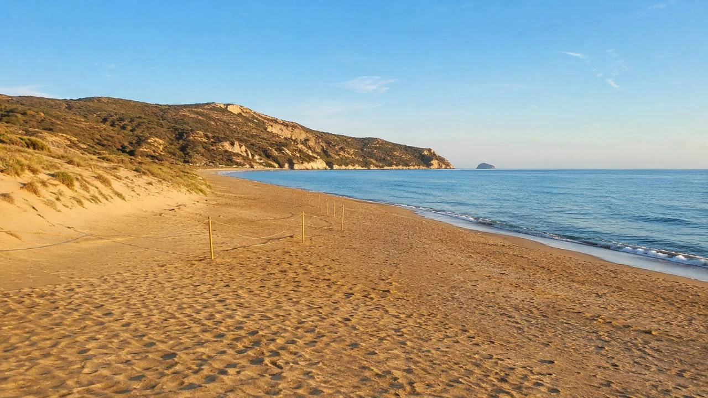
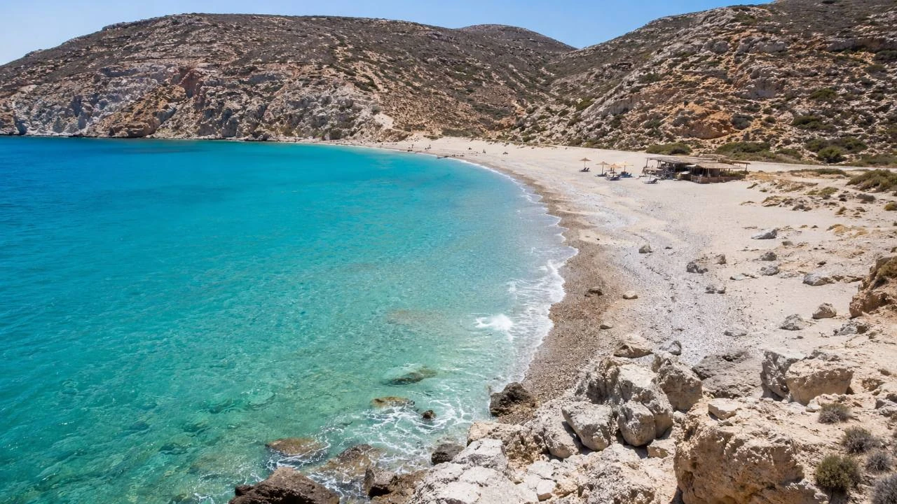
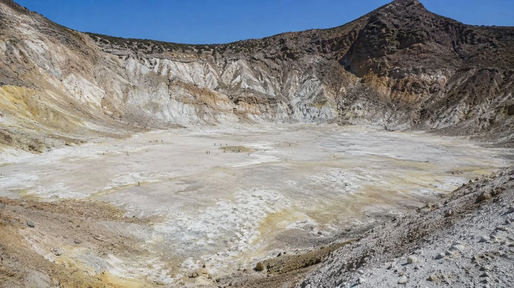
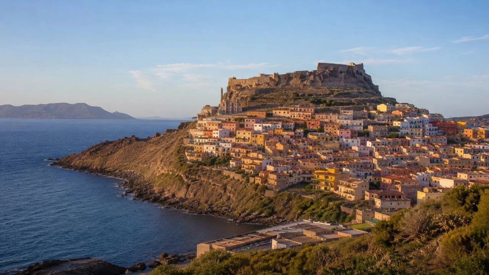
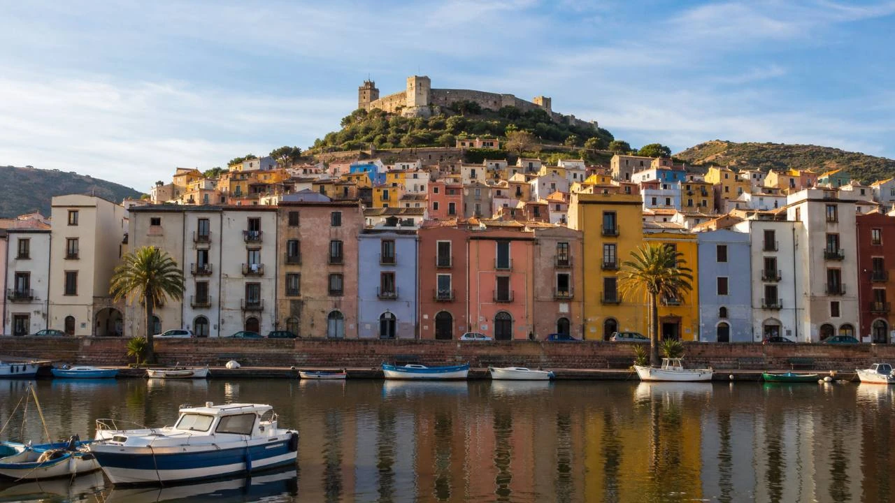
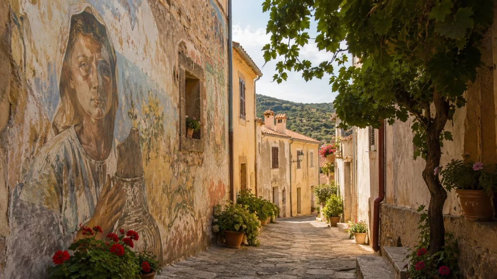
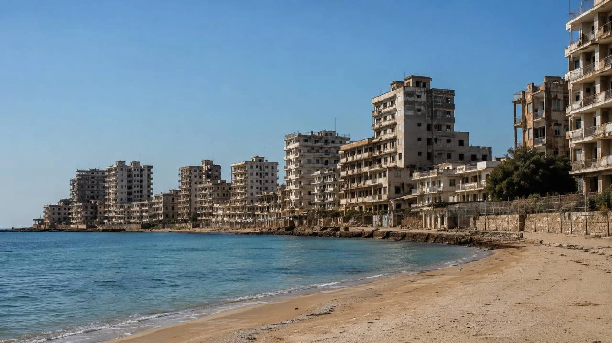

Stredomorie nie sú iba známe pláže, hotelové rezorty a historické pamiatky. Za mnohými miestami sa skrývajú príbehy, ktoré pri bežnej dovolenke môžu ľahko zostať nepovšimnuté.
V prvej časti seriálu sme sa pozreli na menej známe súvislosti známych miest. Druhá časť pokračuje rovnakým spôsobom, tentoraz cez destinácie, ktoré som osobne navštívil: Sicíliu, Zakynthos, Kos, Sardíniu a Cyprus.
Článok napriek tomu nie je cestopisom. Osobné poznanie destinácií je doplnené overeným cestovateľským prieskumom a praktickými informáciami. Výnimkou je sopečný ostrov Nisyros, ktorý som nenavštívil osobne, no patrí medzi najzaujímavejšie výlety dostupné z Kosu.
1. Sicília: cesta, ktorú nedostavali, zachránila tyrkysové pláže Zingara
San Vito Lo Capo je známe najmä dlhou svetlou plážou a výraznou horou Monte Monaco, ktorá sa dvíha priamo nad mestečkom. Práve spojenie hory, pláže a neďalekej prírodnej rezervácie ukazuje, že severozápadná Sicília ponúka oveľa viac než klasický pobyt pri mori.
Monte Monaco: pohľad na San Vito Lo Capo z výšky
Monte Monaco dosahuje výšku približne 530 metrov a vytvára nezameniteľnú kulisu celému zálivu. Jeho názov má súvisieť s tvarom hory, ktorý pri pohľade z určitého smeru pripomína kľačiaceho mnícha.
Výstup na vrchol patrí medzi túry, pri ktorých nie je najväčšou odmenou iba cieľ. S pribúdajúcou výškou sa postupne otvára výhľad na San Vito Lo Capo, dlhú pláž, tyrkysový záliv aj členité pobrežie severozápadnej Sicílie.
Trasa nie je určená iba skúseným horalom, vyžaduje si však primeranú kondíciu, pevnú obuv a dostatok vody. Krajina je otvorená, kamenistá a najmä počas leta ponúka málo tieňa. Najlepšie je preto vyraziť skoro ráno a vyhnúť sa najväčšej popoludňajšej horúčave.
Monte Monaco zároveň ponúka zaujímavý kontrast. Dole sa nachádza rušné dovolenkové mestečko s dlhou plážou, kým na svahoch a vrchole prevláda suchá horská krajina, ticho a výhľady na more.

Zingaro malo pretínať pobrežné cestné spojenie
Len niekoľko kilometrov od San Vito Lo Capo sa začína Riserva Naturale Orientata dello Zingaro, jedna z najkrajších pobrežných prírodných oblastí Sicílie.
Dnes pôsobí ako takmer nedotknuté pobrežie bez hotelov a ciest. V 70. rokoch minulého storočia však bola situácia úplne iná. Pozdĺž pobrežia sa začala budovať cesta, ktorá mala spojiť Scopello so San Vito Lo Capo.
Proti výstavbe sa spojili ochranárske organizácie a obyvatelia regiónu. Protestné aktivity vyvrcholili 18. mája 1980 pochodom, na ktorom sa podľa správy rezervácie zúčastnilo približne 3 000 ľudí. Výstavbu sa podarilo zastaviť a v roku 1981 vzniklo Zingaro ako prvá prírodná rezervácia na Sicílii.
Keby bola pobrežná komunikácia dokončená, presun medzi Scopellom a San Vito Lo Capo by bol jednoduchší. Pobrežie by však pravdepodobne stratilo veľkú časť svojej dnešnej prírodnej podoby.
Malé tyrkysové plážičky ukryté medzi skalami
Najväčším lákadlom Zingara nie je iba samotná turistika. Pozdĺž pobrežného chodníka sa nachádza niekoľko malých zátok s priezračnou tyrkysovou vodou.
Medzi známe zastávky patria:
- Cala Capreria,
- Cala della Disa,
- Cala Berretta,
- Cala Marinella,
- Cala dell’Uzzo,
- Cala Tonnarella dell’Uzzo.
Nejde o široké organizované pláže s hotelmi, reštauráciami a dlhými radmi ležadiel. Väčšinou sú to menšie kamienkové alebo skalnaté zátoky uzavreté medzi vápencovými útesmi.
Farba mora sa podľa slnka a hĺbky mení od svetlej tyrkysovej až po sýtu modrú. Voda býva mimoriadne priezračná, a preto sú zátoky vhodné aj na plávanie s maskou.
Niektoré plážičky ležia relatívne blízko severného alebo južného vstupu. K ďalším treba prejsť väčšiu časť pobrežného chodníka. Hlavná trasa prepája vstup pri Scopelle s oblasťou pri San Vito Lo Capo a vedie cez Punta Capreria, Cala del Varo, Marinellu a Tonnarellu dell’Uzzo.
Práve striedanie turistiky a kúpania robí Zingaro výnimočným. Po úseku kamenistého chodníka nad morom možno zostúpiť do malej zátoky, okúpať sa v tyrkysovej vode a pokračovať ďalej k ďalšej pláži. Zátoky najbližšie k vstupom môžu byť v hlavnej sezóne zaplnené. Pokojnejšie miesta sa spravidla nachádzajú hlbšie v rezervácii, kam už časť návštevníkov nepokračuje.

Praktický tip
Do Zingara si treba priniesť dostatok vody, jedlo, ochranu pred slnkom a vhodnú obuv. Nemožno počítať s klasickým plážovým servisom ani s možnosťou kúpiť si občerstvenie pri každej zátoke. Pred cestou je zároveň rozumné overiť aktuálnu priechodnosť chodníkov a otvorenie vstupov. Požiare, silný vietor alebo iné prírodné podmienky môžu prístup do rezervácie dočasne ovplyvniť.
Pre koho je to dobrý tip
Monte Monaco a Zingaro sú vhodné pre cestovateľov, ktorí chcú spojiť dovolenku pri mori s turistikou a prírodou. Menej vhodné sú pre ľudí, ktorí očakávajú jednoduchý prístup autom, dostatok tieňa, reštauráciu a ležadlo niekoľko metrov od parkoviska. Práve to, že sa za výhľadmi a tyrkysovými zátokami treba trochu prejsť, je však súčasťou ich čara.
2. Zakynthos: po západe slnka sa pláže vracajú korytnačkám
Zakynthos si veľa ľudí predstaví cez pláž Navagio, vysoké biele útesy, Modré jaskyne alebo skalné veže Myzithres. Južná časť ostrova však rozpráva úplne iný príbeh. V zálive Laganas sa nachádza jedno z najdôležitejších miest rozmnožovania korytnačky Caretta caretta v Stredomorí.
Šesť pláží s osobitným režimom
V zálive Laganas sa nachádza šesť hlavných hniezdnych pláží:
- Marathonisi,
- východná časť Laganasu,
- Kalamaki,
- Sekania,
- Dafni,
- Gerakas.
Spolu majú približne 5,5 kilometra. Ochranná organizácia ARCHELON uvádza priemer približne 1 200 hniezd ročne. Pláž Sekania má mimoriadne vysokú hustotu hniezd a patrí do režimu absolútnej ochrany bez voľného prístupu verejnosti.
Národný morský park Zakynthos vznikol v roku 1999 a dnes chráni pláže, morské oblasti aj ďalšie citlivé biotopy zálivu. Turisti sa môžu na viacerých chránených plážach kúpať a tráviť tam deň, musia však rešpektovať pravidlá, ktoré sa na bežných dovolenkových plážach nevyskytujú.
Pláže sú otvorené iba od rána do západu slnka
Marathonisi, východný Laganas, Kalamaki, Dafni a Gerakas možno navštíviť približne od 7.00 hodiny ráno do západu slnka. Po zotmení je prítomnosť ľudí na hniezdnych plážach zakázaná. Práve v noci samice vychádzajú z mora, vyhrabávajú v piesku hniezda a kladú vajcia.
Na niektorých plážach sa každý večer odstraňujú ležadlá a ďalšie plážové vybavenie. Korytnačky potrebujú voľný priechod do zadnej časti pláže a prekážky ich môžu prinútiť vrátiť sa do mora bez nakladenia vajec. Na Marathonisi nie je povolené ani súkromné plážové vybavenie. Aj počas dňa sa majú návštevníci zdržiavať čo najbližšie pri vode. Stredná a zadná časť pláže je priestorom hniezd, ktoré sú často označené ochrannými klietkami.

Mláďatá nesmú dostať „pomoc“ do mora
Keď sa malé korytnačky vyliahnu, orientujú sa podľa svetla nad morským horizontom. Umelé osvetlenie z hotelov, barov alebo mobilných telefónov ich môže zmiasť. Aj dobre mienená pomoc môže narobiť škodu. Mláďatá sa nemajú chytať ani prenášať priamo do mora. Cesta cez piesok je prirodzenou súčasťou ich vývoja a človek by mal zasiahnuť iba podľa pokynov pracovníkov ochrany prírody.
Rovnako dôležité pravidlá platia pri pozorovaní dospelých korytnačiek z lodí. ARCHELON odporúča obmedzený počet plavidiel pri jednom zvierati, nízku rýchlosť, krátky čas pozorovania a dostatočný odstup. Korytnačky sa nemajú kŕmiť, dotýkať sa ich ani prenasledovať vo vode.
Turistická atrakcia alebo divoké zviera?
Na Zakynthose sa ponúka množstvo lodných výletov s prísľubom pozorovania korytnačiek. Samotná prítomnosť lode však ešte neznamená, že výlet rešpektuje pravidlá ochrany prírody. Zodpovedný prevádzkovateľ by nemal korytnačku naháňať, obkolesovať viacerými loďami ani sa k nej približovať tak, aby musela meniť smer alebo sa opakovane ponárať.
Caretta caretta nie je rekvizita na dovolenkovú fotografiu. Je to divoké zviera, ktorého prirodzené správanie by malo mať prednosť pred čo najbližším záberom na mobil.
Dve úplne odlišné tváre jedného ostrova
Sever a západ Zakynthosu ponúkajú dramatické útesy, hlboké more a skalnaté zátoky. Juh ostrova je miernejší, piesočnatejší a pre korytnačky životne dôležitý. Dafni, Gerakas, Kalamaki alebo Marathonisi tak nie sú iba ďalšími bodmi na zozname pláží. Ukazujú, ako sa môže dovolenkový ruch deliť o rovnaký priestor s chráneným živočíchom.
Pre koho je to dobrý tip
Zakynthos je vhodný pre rodiny, páry, väčšie partie aj milovníkov prírody. Záliv Laganas môže byť obzvlášť zaujímavý pre cestovateľov, ktorí nechcú vidieť iba peknú pláž, ale aj pochopiť, prečo na nej platia osobitné pravidlá. Najlepší zážitok nevznikne tým, že sa človek dostane ku korytnačke čo najbližšie. Vznikne vtedy, keď ju môže pozorovať bez toho, aby jej svojou prítomnosťou prekážal.
3. Kos: divoké Cavo Paradiso a sopečný svet za horizontom
Kos môže na prvý pohľad pôsobiť ako pokojný dovolenkový ostrov s dlhými plážami, rezortmi a rovinatou krajinou vhodnou na bicyklovanie. Jednotlivé časti ostrova sú však veľmi rozdielne. Severné pobrežie býva veternejšie a more je tam často zvlnené. Juh ponúka pokojnejšie zátoky. Juhovýchod ukrýva termálne pramene a západná oblasť pri Kefalose je suchšia, hornatejšia a podstatne divokejšia. Práve tam sa nachádza Cavo Paradiso.
Cavo Paradiso: pláž, ku ktorej patrí aj cesta
Cavo Paradiso leží na západnom konci ostrova za oblasťou Kefalos. Už samotná cesta ukazuje inú podobu Kosu: vyprahnutú krajinu, kopce, serpentíny, kozy a čoraz menej turistických služieb. Posledná časť trasy vedie po prašnej a kamenistej ceste. Nie je to klasická pohodlná príjazdová komunikácia. Povrch môže byť nerovný, s kameňmi, prudšími úsekmi a ostrými zákrutami.
Oficiálny turistický web Kosu opisuje Cavo Paradiso ako odľahlú a pokojnú pieskovú pláž, ku ktorej sa prichádza cez Kefalos a prašnú cestu smerom k Agios Mamas. Na mieste sa nachádza iba niekoľko ležadiel a malý bufet so základným občerstvením. Odmenou za náročnejší prístup je široká pláž, dlhé tyrkysové vlny a suchá kopcovitá krajina bez veľkých hotelov.
Cavo Paradiso pôsobí úplne inak než hlavné organizované pláže ostrova. Veľkou časťou zážitku je už postupný pocit vzďaľovania sa od upravených rezortov.

Pláž pokračuje ďalej, než sa na prvý pohľad zdá
Za hlavnou časťou Cavo Paradiso možno pokračovať pešo pozdĺž pobrežia k miestu označovanému ako Mystic Phenomenal Beach. Nejde o samostatné veľké letovisko, ale skôr o pokračovanie divokého pobrežia. Skaly, minimum ľudí, more a suchá krajina vytvárajú atmosféru, ktorá sa výrazne líši od známejších častí Kosu. Aj oficiálny web ostrova uvádza Mystic Phenomenal Beach ako prirodzené pokračovanie Cavo Paradiso.
Pred cestou je potrebné overiť aktuálny stav trasy a podmienky požičovne automobilov. Niektoré požičovne jazdu po nespevnených cestách zakazujú a prípadné poškodenie auta nemusí byť kryté poistením.
Therma Springs: prírodný bazén medzi horúcim prameňom a morom
Ďalšou zvláštnosťou Kosu sú termálne pramene Therma Springs, známe aj ako Embros Thermae. Nachádzajú sa približne 13 kilometrov od mesta Kos na juhovýchodnom pobreží. Horúca minerálna voda tu vyteká priamo pri pláži a mieša sa s chladnejšou morskou vodou.
Medzi kameňmi vzniká prírodný termálny bazén, v ktorom sa teplota mení podľa vzdialenosti od prameňa. Voda pri zdroji dosahuje približne 42 až 50 °C. Bublinky vystupujúce z dna sú spôsobené vulkanickými plynmi prenikajúcimi smerom k povrchu.
Nejde o upravené kúpele ani luxusné wellness centrum. Celé miesto pôsobí prírodne a trochu divoko. Tmavšie kamene a piesok zároveň pripomínajú sopečnú minulosť oblasti.
Nisyros: aktívny sopečný ostrov dostupný z Kosu
Túto časť nemožno označiť ako osobnú skúsenosť. Nisyros nebol súčasťou navštívených miest a nasledujúce informácie vychádzajú z cestovateľského prieskumu. Nisyros patrí medzi menšie ostrovy Dodekanéz. Oficiálny grécky turistický portál ho predstavuje ako ostrov s aktívnou sopkou, výraznou kalderou, geotermálnymi poľami a dedinkami postavenými z vulkanického kameňa.
Najznámejšou časťou vulkanického systému je hydrotermálny kráter Stefanos. Svetlé dno, žltkasté sírne usadeniny, horúca pôda a unikajúce plyny vytvárajú krajinu, ktorá miestami pripomína inú planétu.

Počas hlavnej sezóny sa na Nisyros organizujú jednodňové lodné výlety z Kosu, často z Kardameny. Program zvyčajne kombinuje plavbu, návštevu prístavného mestečka Mandraki a autobusový presun do oblasti kaldery. Cestovné poriadky, ceny a konkrétny program sa môžu meniť. Pred cestou je preto potrebné overiť aktuálnu ponuku priamo na mieste. V lete môže byť vo vnútrozemí Nisyrosu veľmi horúco. Nevyhnutná je pevná obuv, pokrývka hlavy a dostatok vody.
Ostrov, ktorý mal podľa legendy vytvoriť Poseidón
Nisyros má silné mytologické spojenie s Kosom. Podľa jednej z gréckych legiend bojoval Poseidón počas vojny bohov s gigantmi proti obrovi Polybotovi. Boh mora mal odlomiť kus Kosu, hodiť ho na obra a pochovať ho pod ním. Z odtrhnutej časti Kosu mal vzniknúť Nisyros. Sopečné výpary mali byť podľa legendy dychom porazeného obra uväzneného pod ostrovom. Rovnakú legendu uvádza aj oficiálny grécky turistický portál. Geológia ponúka vedecké vysvetlenie vzniku ostrova. Mýtus zase ukazuje, ako si ľudia v minulosti vysvetľovali otrasy, paru a zvláštnu sopečnú krajinu.
Pre koho sú Cavo Paradiso a Nisyros vhodné
Cavo Paradiso je vhodné pre cestovateľov, ktorí vyhľadávajú odľahlejšie pláže, prírodu a dobrodružnejšiu cestu. Nisyros môže zaujať návštevníkov, ktorých láka geológia, sopečná krajina a nezvyčajný celodenný výlet. Obe miesta ukazujú, že Kos nie je iba ostrovom hotelov a dlhých pláží. Na jeho západe sa nachádza divoké pobrežie a len krátka plavba od neho leží jeden z najzaujímavejších sopečných ostrovov Egejského mora.
4. Sardínia: pevnosť nad morom, farebné mesto a dediny namaľované na domoch
Pri Sardínii sa väčšina pozornosti prirodzene sústreďuje na more. La Pelosa, Costa Smeralda alebo zátoky východného pobrežia dokážu zatieniť takmer všetko ostatné. Sever a západ ostrova však ukazujú inú Sardíniu. Je to svet stredovekých pevností, remesiel, farebných domov, nástenných malieb a malých dedín, ktoré pôsobia ako galérie pod holým nebom.
Castelsardo: mesto postavené ako pevnosť
Castelsardo vyrástlo na skalnom výbežku nad morom. Jeho historické jadro sa rozprestiera na strmom svahu okolo hradu rodu Doria. Úzke uličky, schody a domy natlačené medzi hradbami pripomínajú, že pôvodným zmyslom miesta nebol pohodlný cestovný ruch, ale obrana a kontrola pobrežia.
V hrade sa dnes nachádza Múzeum stredomorského košikárstva. Tradičné pletenie košíkov je s Castelsardom úzko spojené a ručne vyrábané výrobky možno stále vidieť v uliciach historického jadra. Oficiálny turistický portál Sardínie uvádza hrad Doriov a múzeum tkania medzi hlavnými atrakciami mesta.
Castelsardo je zaujímavé aj tým, ako sa mení pri pohľade z rôznych smerov. Z diaľky pôsobí ako kompaktná pevnosť vyrastajúca zo skaly. Vo vnútri sa však rozpadá na spleť malých uličiek, výhľadov, schodísk a domov.

Bosa: farebné mesto pri jedinej splavnej rieke Sardínie
Bosa patrí medzi najfotogenickejšie mestá Sardínie. Farebné domy historickej štvrte Sa Costa sa dvíhajú po svahu smerom k hradu Malaspina. Pod nimi preteká rieka Temo, ktorá rozdeľuje mesto na dve časti.
Oficiálny turistický portál Sardínie opisuje Bosu ako jedno z najmalebnejších talianskych miest, známe pestrofarebnými domami pri ústí rieky Temo. Na jednom brehu sa nachádza historické jadro s farebnými fasádami. Na opačnom stoja budovy bývalých garbiarní.
Spracovanie kože bolo v minulosti dôležitou súčasťou miestneho hospodárstva. Staré garbiarne dnes patria k priemyselnému dedičstvu mesta a pripomínajú, že Bosa nebola vytvorená ako farebná kulisa pre turistov. Bola normálnym remeselníckym a obchodným centrom. Bosa tak spája rieku, farebnú architektúru, hrad a príbeh tradičnej výroby na pomerne malom priestore.

Tinnura: dedina ako galéria pod holým nebom
Tinnura leží približne deväť kilometrov od Bosy a patrí medzi najmenšie obce Sardínie. Má iba približne 250 obyvateľov. Napriek svojej veľkosti pôsobí ako otvorené múzeum moderného umenia. Na fasádach domov sa nachádzajú veľké farebné maľby zobrazujúce prácu na poli, vinobranie, remeslá, každodenný život a miestne tradície.
Nejde o náhodné pouličné grafity. Jednotlivé obrazy rozprávajú príbehy komunity a pripomínajú spôsob života predchádzajúcich generácií. Tinnura je doplnená sochami sardínskych umelcov, upravenými námestiami a ulicami vydláždenými červeným trachytom, bielym mramorom a sivým čadičom. Oficiálny portál Sardínie ju priamo označuje ako malé múzeum pod holým nebom a uvádza, že maľby na domoch zachytávajú výjavy z vidieckeho a dedinského života.

Flussio: dedina košíkov z rastliny asfodel
Tinnura plynulo prechádza do susednej obce Flussio. Obe dediny spája hlavná cesta a návštevník si nemusí ani okamžite uvedomiť, že už prešiel z jednej obce do druhej. Flussio je známe tradičným pletením košíkov nazývaných corbule. Vyrábajú sa okrem iného zo sušených stoniek rastliny asfodel.
Po zbere sa rastliny sušia vo dvoroch, na uliciach a námestiach. Počas správneho obdobia tak môže celá dedina pôsobiť ako veľká prírodná dielňa. Pletenie sa odovzdávalo medzi generáciami a dodnes patrí k najvýraznejším znakom obce. Oficiálny turistický portál uvádza, že Flussio preslávilo práve spracovanie asfodelu a výroba zložitých pletených košíkov. Niektoré maľby možno vidieť aj vo Flussiu, no hlavnou témou obce zostávajú remeslá, košíky a tradičné spracovanie miestnych rastlín.
Štyri rozdielne zastávky počas jedného výletu
Castelsardo, Bosa, Tinnura a Flussio nemožno vnímať ako štyri rovnaké mestečká. Castelsardo je predovšetkým pevnosť nad morom. Bosa je farebné riečne mesto s hradom a bývalými garbiarňami. Tinnura je galéria nástenných malieb. Flussio predstavuje tradičné košikárstvo a remeselný život menšej sardínskej obce.
Práve rozdielnosť týchto miest ukazuje, že Sardínia nie je iba ostrovom pláží. Jej identita sa ukrýva aj v remeslách, domoch, dedinách a príbehoch ľudí, ktorí žili ďalej od najznámejších letovísk.
Pre koho je to dobrý tip
Tieto miesta sú vhodné pre cestovateľov s prenajatým autom, fotografov, milovníkov menších miest a ľudí, ktorí chcú striedať more s poznávaním. Nie je potrebné tráviť v každej obci celý deň. Tinnura a Flussio môžu byť kratšími zastávkami, zatiaľ čo Bosa a Castelsardo si zaslúžia viac času na prechádzku.
5. Cyprus: od dovolenkového raja k mestu, v ktorom sa zastavil čas
Ayia Napa a Protaras patria medzi najznámejšie dovolenkové oblasti Cypru. Nissi Beach, Fig Tree Bay, Konnos Beach a ďalšie zátoky východného pobrežia ponúkajú svetlý piesok, priezračnú vodu a klasickú dovolenkovú atmosféru. Len niekoľko desiatok kilometrov od nich sa však nachádza miesto, ktoré rozpráva úplne iný príbeh Cypru – opustená pobrežná štvrť Varosha pri Famaguste.
Ayia Napa a Protaras: dve letoviská, medzi ktorými leží prírodný park
Ayia Napa je známa rušnejšou atmosférou, plážami a nočným životom. Protaras pôsobí spravidla pokojnejšie a je obľúbený medzi rodinami a pármi. Medzi oboma letoviskami sa rozprestiera Cape Greco, chránený národný lesný park a územie Natura 2000.
Park má rozlohu približne 385 hektárov a ponúka pobrežné chodníky, vyhliadky, cyklotrasy, útesy a morské jaskyne. Nachádza sa východne od Ayia Napy a juhovýchodne od Protarasu. Cape Greco ukazuje, že aj v jednej z najturistickejších oblastí Cypru možno nájsť pobrežie bez súvislej hotelovej zástavby. Počas jedného dňa sa dá spojiť kúpanie na známej pláži s kratšou túrou, vyhliadkou nad útesmi alebo zastávkou pri morských jaskyniach.
Varosha: niekdajšie dovolenkové centrum zostalo prázdne
Varosha bola pred rokom 1974 modernou turistickou štvrťou Famagusty. Pri pobreží stáli hotely, apartmány, reštaurácie a obchody. Po udalostiach v roku 1974 jej obyvatelia oblasť opustili. Štvrť bola uzavretá, oplotená a desiatky rokov zostávala mimo bežného života. Hotely postupne chátrali, ulice zarastali a Varosha získala označenie mesto duchov.
Niektoré časti oblasti boli po desaťročiach uzavretia postupne sprístupnené návštevníkom. Kroky smerujúce k ďalšiemu otváraniu však vyvolali ostré politické reakcie. Európska únia v roku 2021 odsúdila jednostranné kroky vo Varoshi a pripomenula rezolúcie Bezpečnostnej rady OSN, podľa ktorých sú pokusy osídliť oblasť inými osobami než jej pôvodnými obyvateľmi neprípustné.

Cyprus je členom EÚ, ale ostrov zostáva rozdelený
Celý Cyprus je z právneho hľadiska súčasťou Európskej únie. V severnej časti ostrova, kde vláda Cyperskej republiky nevykonáva účinnú kontrolu, je však uplatňovanie práva EÚ pozastavené. Od roku 1974 oddeľuje obe časti ostrova línia prímeria známa ako Green Line. Európska komisia zároveň upozorňuje, že nejde o vonkajšiu hranicu Európskej únie, hoci prechod osôb a tovaru sa riadi osobitnými pravidlami.
Pri plánovaní návštevy severnej časti je potrebné overiť aktuálne podmienky prechodu, platnosť poistenia, pravidlá prenajatého auta a odporúčania slovenského ministerstva zahraničných vecí. Podmienky sa môžu meniť a nie každá autopožičovňa umožňuje cestu vozidlom cez deliacu líniu.
Mesto duchov nie je iba turistická atrakcia
Varosha môže na fotografiách pôsobiť ako filmová kulisa. Za opustenými hotelmi a domami sa však skrývajú príbehy ľudí, ktorí tam žili, podnikali alebo vlastnili nehnuteľnosti. Preto nie je vhodné vnímať ju iba ako zvláštne miesto na fotografovanie. Je to pripomienka nevyriešeného politického konfliktu a rozdelenia ostrova, ktoré pretrváva už desaťročia. Aj preto treba k návšteve pristupovať s rešpektom a nepodávať zjednodušený obraz, podľa ktorého ide iba o dávno opustené dovolenkové mesto.
Najsilnejší kontrast východného Cypru
Kontrast medzi Ayia Napou, Protarasom, Cape Greco a Varoshou patrí k najvýraznejším v celom Stredomorí. Na jednej strane sú upravené pláže, hotely, reštaurácie a dovolenkový ruch. Na druhej strane stoja prázdne budovy a ulice pripomínajúce, že história Cypru nie je iba príbehom Afrodity, mora a slnka. Vzdialenosti pritom nie sú veľké. Práve to robí tento kontrast ešte silnejším.
Pre koho je to dobrý tip
Ayia Napa a Protaras sú vhodné pre rodiny, páry aj väčšie partie. Cape Greco osloví ľudí, ktorí chcú pláže doplniť prírodou a kratšou turistikou. Varosha je tipom skôr pre návštevníkov, ktorí chcú pochopiť Cyprus hlbšie a sú pripravení vnímať miesto v historickom a politickom kontexte.
Za každou známou destináciou sa môže skrývať druhý príbeh
Týchto päť oblastí spája jedna vec. Väčšina ľudí ich pozná predovšetkým ako dovolenkové destinácie, no každá ukrýva aj menej viditeľnú vrstvu.
Na Sicílii zostalo pobrežie Zingara bez cesty vďaka ľuďom, ktorí sa postavili proti jej výstavbe. Výsledkom sú malé tyrkysové plážičky, ku ktorým sa dodnes prichádza pešo. Na Zakynthose sa pláže po západe slnka vracajú korytnačkám a človek musí prispôsobiť svoje správanie ich prirodzenému životnému cyklu. Kos ponúka divokú cestu na Cavo Paradiso, horúce termálne pramene a výhľad smerom k sopečnému Nisyrosu.
Na Sardínii sa história neukrýva iba v hradoch. Je namaľovaná na stenách domov, zapletená do košíkov a uložená v starých garbiarňach pri rieke. Cyprus zase ukazuje, ako blízko seba môžu ležať moderné dovolenkové rezorty, chránená príroda a miesto pripomínajúce stále nevyriešené rozdelenie ostrova.
Práve takéto súvislosti robia cestovanie zaujímavejším. Keď poznáme príbeh miesta, nevidíme už iba pláž, horu, dedinu alebo starú budovu. Vidíme aj to, prečo miesto vyzerá tak, ako vyzerá, čo sa tam odohralo a čím sa odlišuje od desiatok ďalších dovolenkových bodov na mape Stredomoria.
Poznámka k článku a zdroje
Článok kombinuje osobné poznanie uvedených destinácií s cestovateľským prieskumom z verejne dostupných a oficiálnych zdrojov. Nisyros je uvedený ako tip na výlet z Kosu a nepatrí medzi osobne navštívené miesta. Pred cestou si vždy overte aktuálnu prístupnosť prírodných oblastí, lodné spojenia a pravidlá prechodu medzi jednotlivými časťami Cypru.
Pre overenie pravidiel a súvislostí článok vychádza aj z informácií rezervácie Zingaro, ARCHELON, Visit Greece, SardegnaTurismo, Visit Cyprus a Európskej komisie.